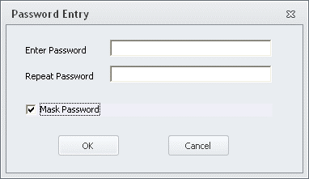

Version 7.0.1 - What’s New?
Model Notification (Play Sound & Send Mail/Text)
The ‘HailMary.s’ script will now send the user and email alert when the model finishes or if the model crashes. To receive emails alerts, the user needs to specify the SMTPSERVER, USERNAME, PASSWORD, FROM and TO sections in the SENDMAIL command (note there are two places in ‘HailMary.s’ that would need to be changed). For a user not familiar with defining email parameters, most of this information may be obtained from looking at the email settings in an email enabled smart phone or by contacting the agency’s IT department.
SENDMAIL SMTPSERVER = 'webmail.rsginc.com',
USERNAME = 'i-rsg\chad',
PASSWORD = '**XYyRODsGKVEGOpPVlHOPDVVsPElStCOuLIMDIqBatCQTU**',
FROM = 'chad.worthen@rsginc.com',
TO = 'chad.worthen@rsginc.com',
Subject = 'Model Finished',
Message = 'Congratulations!'The user may also use the Cube Base text editor to encrypt the user’s PASSWORD.
- Open any text file in Cube Base.
- In the ‘Insert’ menu option or ribbon command, select ‘Password for email’.
- A dialog box opens which allows the user to enter a password (make sure ‘Mask Password’ is checked). The encrypted text will be entered into the text document in Cube.

- Copy the encrypted password text and paste into the PASSWORD variable (text between the quote marks) in ‘HailMary.s’.
According to Cube help, the user can also send mail as a text message to a cell phone account that supports text messaging. Examples of cell phone provider messaging e-mail addresses are listed below (check with cell phone service provider to verify the appropriate address):
- Phone#@tmomail.net
- Phone#@ messaging.sprintpcs.com
- Phone#@ vtext.com
- Phone#@ txt.att.net
For instance, a text message address might be added to the TO command by typing the following text:
TO = 'chad.worthen@rsginc.com', '5106635200@messaging.sprintpcs.com',To turn email alerts off set the ‘SendEmailAlerts’ variable to 0 in ‘1ControlCenter.txt’.